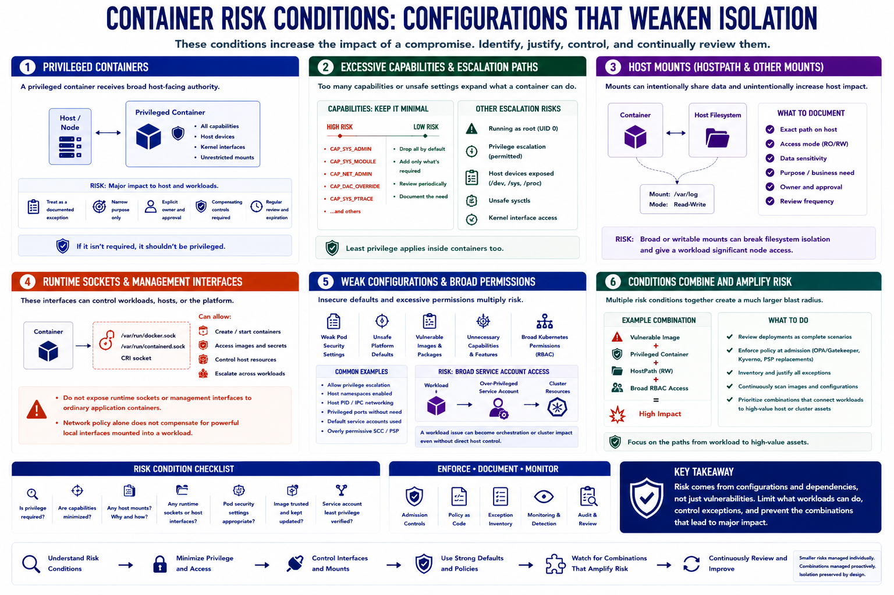

Common Risk Conditions
Connecting to LMS... Progress: in progress

Narration
Risk conditions are configurations or dependencies that weaken expected isolation. A privileged container is a major example because it receives broad host-facing authority. Privilege should be treated as a documented exception with a narrow purpose, explicit owner, and compensating controls.
Excessive Linux capabilities create a similar problem at a smaller scale. Workloads should receive only the capabilities they require. Running as root, permitting privilege escalation, or exposing host devices can further expand the effect of a container compromise.
HostPath and other host mounts intentionally expose node files or directories. The threat model should identify the exact path, access mode, data sensitivity, and reason. Broad or writable mounts can undermine filesystem isolation and increase node impact.
Runtime sockets and management interfaces are highly sensitive because they may control workload creation or host resources. They should not be exposed to ordinary application containers. Network policy alone does not compensate for a powerful local interface mounted into a workload.
Weak pod-security settings, unsafe platform defaults, vulnerable images, unnecessary packages, and overly broad Kubernetes permissions all increase risk. Broad service-account access can turn a workload issue into orchestration or cluster impact even without direct host control.
Conditions often combine. A vulnerable image running with privilege, a host mount, and broad RBAC has a much larger blast radius than any one finding suggests. Review deployments as complete scenarios, enforce policy at admission, inventory exceptions, and prioritize combinations that connect workloads to high-value host or cluster assets.